cosa è lo scheduling?
È la pianificazione e gestione delle risorse come attività, processi e informazioni nel caso della CPU lo scheduler ad esempio mette in ordine i processi a seconda delle priorità mettendo una determinata capacità di risorse della CPU ad ogni processo a seconda delle loro necessità e priorità(ad esempio hai brave e discord aperto, lo scheduler dice alla CPU di dare il 30% delle risorse a brave e il 20% a discord), lo scheduler inoltre dà un tot di tempo alla CPU per eseguire il processo
Scheduling dei multiprocessori
Lo scheduler può essere mono-dimensionale o bi-dimensionale nel caso del mono-dimensionale hai solo una CPU quindi lo scheduler deve solo decidere quale processo avviare invece nel caso bi-dimensionale lo scheduler deve decidere quale processo avviare e quale CPU utilizzare
Esistono vari algoritmi di scheduling per ciascuna situazione:
-
timesharing
-
condivisione dello spazio
-
schedulazione gang
partiamo dal primo
TIME SHARING
È utilizzato quando i processi sono indipendenti(non lavora con delle risorse che esegue un altro processo) l’algoritmo usa un vettore che contiene tutti i processi che sono nello stato “ready” quindi sono pronti per partire, con diverse priorità di esecuzione avendo un unica struttura dati e dei processi indipendenti tutte le CPU sono perfettamente bilanciate e non ci sarà mai una CPU oberata da lavoro mentre un’altra è inattiva come se fosse un sistema monoprocessore problemi:
- se hai troppe CPU tutte vogliono accedere alla struttura dati(il vettore)
- quando una delle CPU deve fare un’operazione di I/O che richiede del tempo, oltre ad essere innescato lo spin lock, avviene un cambio di contesto, ovvero la CPU deve passare dall’esecuzione del processo che stava eseguendo a un altro processo ad esempio di attesa dell’I/O. Il problema è quando tutti i processi entrano in questo stato e iniziano ad essere sovraccarichi di lavoro
cosa è lo spin lock
È un meccanismo di protezione che aiuta la sincronizzazione tra le risorse delle CPU evitando che n CPU interagiscano con la stessa cosa. si divide in due stati:
- l’attesa(spin) è quando la risorsa è in attesa di avere interazioni
- il lock(il blocco della risorsa) è quando la risorsa è bloccata a tutte le altre CPU perché sta avendo una interazione
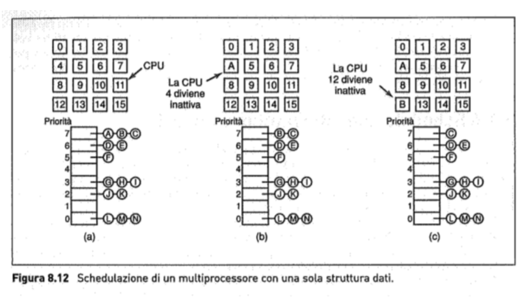 Quando una CPU ci mette troppo tempo e quindi termina il quantum di tempo dato dallo scheduler, la CPU quindi ancora deve rilasciare il lock, la CPU può accedere un tempo extra quindi un extra quantum, questa operazione viene chiamata smart scheduling.
L’affinity scheduling fa eseguire il medesimo processo alla CPU che già lo ha eseguito in passato così da sfruttare i dati nella cache per creare questa affinità si utilizza un algoritmo di schedulazione a 2 livelli:
- scheduling ad alto livello, vengono messi i processi con elevata priorità e vengono assegnati alle CPU che in quel momento sono inutilizzate
- scheduling a basso livello, viene fatto uno scheduling assegnando il processo in base all’affinità della cache e delle priorità, comportando un miglioramento delle performance generali questa cosa dà un carico equo alle CPU le liste di processi vengono usate meno perché alle CPU vengono assegnati compiti che già conoscono
SPACE SHARING SCHEDULING
Quando ci sono correlazioni tra i vari processi si può usare lo scheduling per condivisione di spazio cosa succede? il processo viene suddiviso in tanti piccoli thread e lo scheduler assegna n thread a n CPU. Essendo processi complementari lo scheduler avvierà i processi una volta che ci saranno disponibili n CPU libere, quindi se il processo richiede 10 thread e ci sono 9 CPU disponibili lo scheduler non farà eseguire nulla vantaggio: riduce gli overhead, perché le CPU sono libere di accedere alla memoria senza troppi conflitti problema: quando le CPU non sono libere si perde tempo nell’attesa che si liberino
overhead cosa è?
Quelle risorse in più all’interno di un processo, ad esempio in un cambio di contesto in mezzo ai due processi c’è il cambio stesso, quindi una risorsa in più
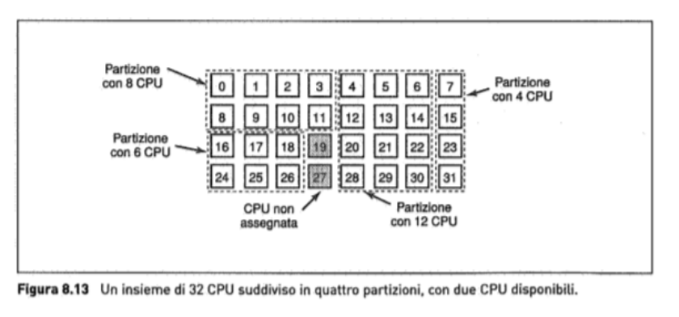
SCHEDULAZIONE GANG
Nasce dal bisogno di schedulare insieme risorse(spazio) e tempo si compone in 3 passaggi:
- si creano tanti piccoli gruppi di thread correlati chiamate unità o gang
- tutti i thread di una gang vengono eseguiti assieme su diverse CPU con il sistema di timesharing
- tutti i thread della gang iniziano e terminano assieme questo sistema funziona perché ogni CPU è scandita da un quanto ben definito e discreto, dopo che il quantum termina alle CPU viene fatta nuovamente l’operazione di scheduling e se un thread si blocca, la sua CPU rimane inattiva fino allo fine del quanto 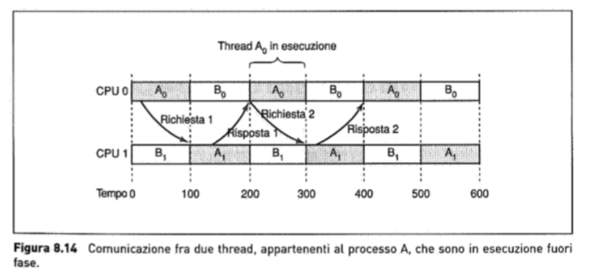
Tutti i thread vengono eseguiti contemporaneamente a seconda di uno scheduling fatto e in un determinato quantum di tempo. Ciò permette anche lo scambio di informazioni immediate tra le varie CPU di risorse necessarie e condivise 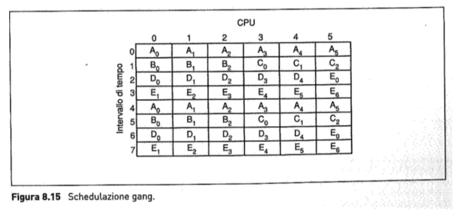
MULTICOMPUTER
Ogni CPU del multicomputer si interfaccia con la sua memoria privata con LOAD e STORE ma per scambiare informazioni con altre CPU usano send receive attraverso rete di interconnessione
- una CPU è interessata ai dati di un’altra CPU
- dopo aver scoperto quale CPU possiede i dati che le interessano le spedisce una richiesta di copia dei dati. Di norma questa operazione blocca la CPU finché la richiesta non viene soddisfatta.
- la richiesta arriva alla CPU 1, il suo software lo analizza e restituire i dati richiesti. la CPU 0 riceve il messaggio di risposta, il suo software si sblocca e continua l’esecuzione. I processori di comunicazione sono collegati tramite una rete ad alta velocità. quando un programma applicativo esegue una primitiva send il processore di comunicazione riceve una notifica e si incarica di trasmettere il blocco di dati dell’utente presso la macchina di destinazione (eventualmente dopo aver chiesto, e ricevuto, il permesso di farlo). un insieme di computer si dice Cluster I multicomputer sono facili da costruire perché il componente base è un PC con una scheda di rete con alte performance.
TOPOLOGIA
È il modo in cui vengono interconnessi i computer tra loro è composto da:
- nodi, ovvero il computer stesso con CPU memoria e scheda di rete
- switch(opzionale), ovvero il dispositivo di instradamento che consente lo scambio di pacchetti tra i dispositivi, è opzionale poiché i nodi possono essere connessi direttamente tra di loro senza uso di quest’ultimi ci sono diversi tipi di topologia:
1. A stella
i quadrati sono i computer che per comunicare tra loro usano uno switch di intermezzo che consente i trasferimenti 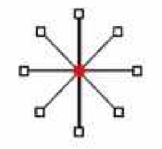
3. Ad anello
non sono necessari switch poiché ogni computer è collegato con altri 2 e funziona attraverso un sistema di token che se viene preso da uno dei computer ha la possibilità di trasferire le informazioni tra i computer finché non lo posa 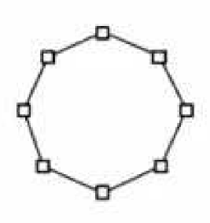
4.A Griglia(grid) o (mesh)
è una piattaforma bidimensionale altamente scalabile dove il percorso più lungo tra due nodi si chiama diametro e aumenta come la radice quadrata dei due nodi 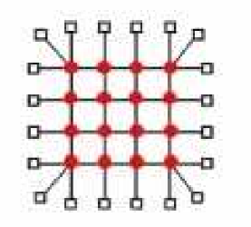
5. Doppio Toro
Gli switch sono più interconnessi tra loro permettendo una miglior tolleranza e velocità di instradamento ma con un diametro inevitabilmente più piccolo 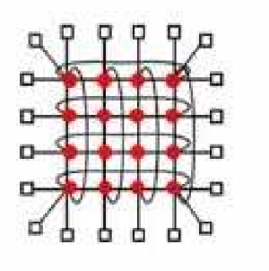
6. Cubo
Struttura tridimensionale regolare 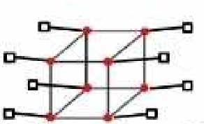
7. Ipercubo Scalabile
Un cubo di dimensione 4 è ottenibile mettendo insieme due cubi di dimensione 3 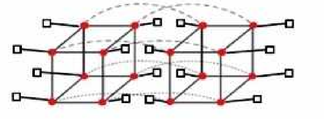 Molti computer paralleli usano questa topologia perché il suo diametro cresce linearmente con la sua dimensione: diametro =
CLUSTER
sono una serie di computer connessi assieme e si dividono in 2 tipi:
- centralizzati: sono computer nella stessa stanza e sono uguali
- decentralizzati: non sono nella stessa stanza e sono diversi
SCHEMI DI SWITCHING
Nei multicomputer sono usati due tipi di schemi di switching.
1. Store-and-forward packet switching
Ogni messaggio è composto da pacchetti che a seconda delle sue priorità, peso ecc… viene instradato e raggiunge il nodo destinatario. È flessibile ed efficiente ma potrebbe verificarsi un aumento dei tempi di latenza nella fase di invio
2. Circuit switching
Nel secondo caso vengono coinvolti degli switch che si scambiano il messaggio tra di loro partendo da un mittente fino a raggiungere lo switch vicino al destinatario, ciò riduce la latenza perché gli Switch non devono salvare l’informazione devono solo fare da “ripetitori”. Questo sistema richiede una fase di inizializzazione che prende tempo, ma una volta terminata il processo è velocissimo. Una variante è il wormhole routing, spezza il pacchetto in sottopacchetti e permette a quest’ultimi di iniziare il tragitto prima che sia stato inizializzato il collegamento.
Interfacce di rete
Ogni Computer(Nodo) del Multicomputer ha almeno una scheda di rete e una memoria RAM, che serve per memorizzare i pacchetti che entrano ed escono dal nodo La scheda di rete comprende RAM e DMA I DMA(Direct Memory Access) sono dei canali di trasferimento diretto dei dati senza uso della CPU 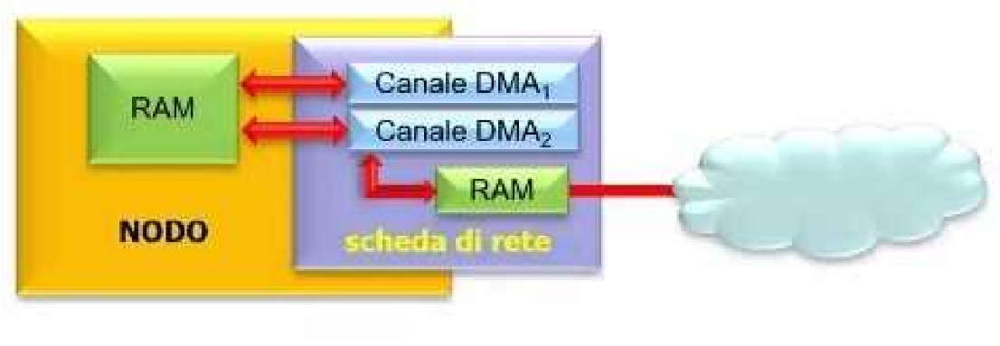
SOFTWARE DI COMUNICAZIONE
si dividono in più livelli
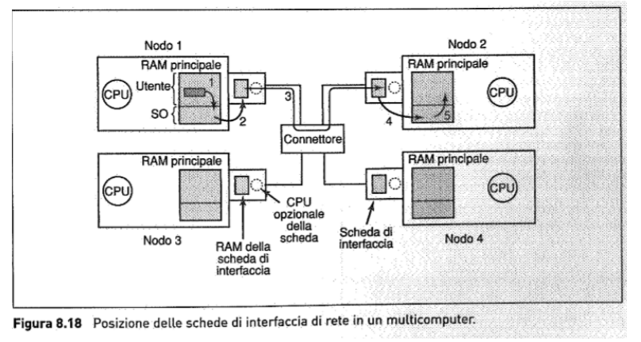
1. Software di comunicazione di basso livello
Le primitive send e receive possono essere bloccanti (sincrone) o non bloccanti (asincrone). L’eccessiva copia di pacchetti è il nemico principale delle prestazioni dei multi computer (i pacchetti vengono copiati per varie ragione tra cui evitare perdita di dati, backup ecc..). Per evitare che ciò accada alcuni multi computer accedono direttamente alla scheda di rete per ricevere o inviare dati. Se così non fosse tutta l’operazione di invio/ricezione dati sarebbe gestito dal sistema operativo che dovrebbe fare chiamate multiple di sistema per gestire il tutto, questo porta a creare molteplici copie dei pacchetti durante il passaggio dati tra utente e kernel. Problemi: difficile da programmare, rischi di sicurezza poiché si accede direttamente alla scheda di rete, potrebbero esserci tanti processi sullo stesso nodo che vogliono spedire i pacchetti.
2. Software di comunicazione a livello utente
I processi sulle diverse CPU di un multicomputer comunicano attraverso lo scambio di messaggi usando Sender e Receiver
-
SEND: Questa funzione invia un messaggio ad un processo identificato come destinazione (destination). Quando si chiama la funzione SEND, si specifica il destinatario del messaggio e un puntatore al messaggio stesso (message_pointer). Il chiamante, ovvero il processo che esegue la chiamata SEND, viene bloccato fino a quando il messaggio non viene effettivamente spedito. Questo significa che il processo chiamante rimane in sospeso fino a quando la CPU non ha completato l’invio del messaggio alla destinazione.
-
RECEIVE: Questa funzione è chiamata da un processo che desidera ricevere un messaggio da un’altra CPU. Quando si chiama la funzione RECEIVE, si specifica l’indirizzo su cui il processo ricevente è in ascolto (address) e un puntatore al buffer in cui memorizzare il messaggio ricevuto (message_pointer). Il processo chiamante viene bloccato fino a quando non arriva un messaggio sulla porta specificata dall’indirizzo. Una volta ricevuto il messaggio, viene copiato nel buffer e il processo chiamante viene sbloccato, consentendogli di procedere con l’elaborazione. In un multicomputer statico il numero di CPU è noto a priori, quindi il campo address è formato dall’identificativo della CPU e dall’identificativo del processo o della porta sulla CPU selezionata.
CHIAMATE BLOCCANTI E NON BLOCCANTI
Le primitive send e receive possono essere bloccanti (sincrone) o non bloccanti (asincrone).
- bloccanti significa che tu finchè non termini di fare un’operazione di send o receive non puoi fare altro
- non bloccanti il contrario restituendo il controllo al chiamante subito dopo che ha fatto un’operazione di send o receive, lo svantaggio è che il mittente non sa quando il pacchetto è stato inviato e inoltre non può usare il flusso del buffer per inviare altri pacchetti mentre ne sta già inviando uno Ci sono 3 soluzioni a questo problema
- il Kernel copia il messaggio in un buffer interno
- il mittente riceve un interrupt così che può riutilizzare il buffer
- mentre il mittente manda un’altro messaggio il buffer si sdoppia creando una sua copia ma mettendo la sua pagina in modalità read-only
Il processo mittente può eseguire quindi:
-
una spedizione bloccante e mantenere bloccata la CPU
-
una spedizione non bloccante con copia (la CPU spreca tempo solo per eseguire una copia)
-
una spedizione non bloccante con interrupt (programmazione difficile)
-
una spedizione non bloccante con copia su scrittura (la CPU spreca tempo anche per la copia di fine processo oltre le scritture richieste)
In un sistema multi-thread la prima è la scelta migliore: mentre il thread che esegue la send è bloccato, gli altri continuano a lavorare.
Il processo destinatario può utilizzare una receive non bloccante(non blocchi quello che fai ma fai una receive) una receive bloccante comporta una attesa continua e non permette di svolgere altre operazioni nel mentre.
L’arrivo di un messaggio può essere gestito:
-
tramite interrupt, ma sono difficili da programmare e molto lenti
-
richiamando una procedura poll(), si tratta di una procedura che viene chiamata per verificare se ci sono messaggi in attesa di essere letti
-
attraverso la creazione automatica di un thread (chiamato thread pop-up) che finito il suo compito muore spontaneamente
-
attraverso un interrupt che attiva nella ISR il codice di gestione (questo schema è una versione ibrida dei precedenti che sfrutta l’idea di un thread pop-up senza creare alcun thread, migliorando così le performance, e si chiama messaggi attivi)
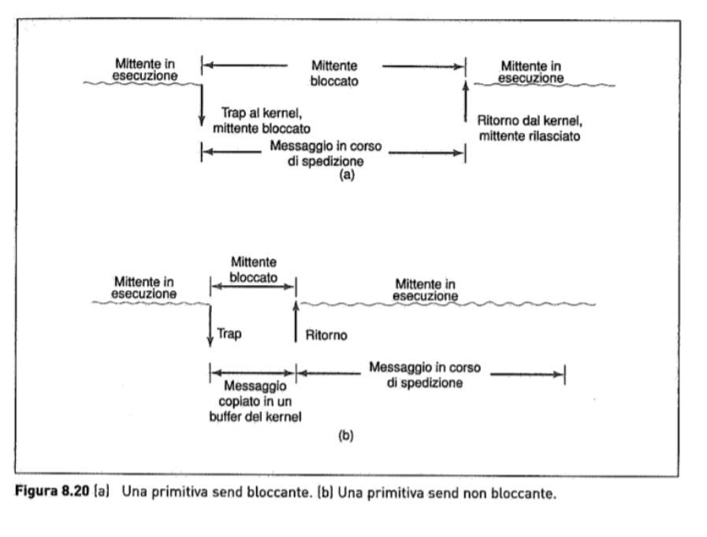
Remote Procedure Call (RPC)
Il modello a scambio di messaggi è molto conveniente per un sistema operativo multi computer ma soffre di un grave difetto ovvero tutti le comunicazioni (i programmi) utilizzano l’I/O. Ci sono due entità il chiamante e il chiamato, quando un processo su una macchina 1 ha bisogno di eseguire una procedura presente sulla macchina 2, la macchina 1 entra in attesa e la macchina 2 elabora la procedura, la macchina 1 invia delle info attraverso i parametri e la macchina 2 li invia a sua volta ritornando i risultati La procedura chiamante è il client e la procedura chiamata è il server il programma client usa una procedura client stub per chiamare una procedura remota viceverda il chiamato ha il server stub
-
il passo 1 è la chiamata da parte del client del client stub, che è una chiamata di procedura locale, con i parametri messi sullo stack nel modo consueto;
-
il passo 2 consiste nell’impacchettamento dei parametri in un messaggio e nell’effettuare una chiamata di sistema per spedire il messaggio (impacchettare i parametri è detto marshaling);
-
nel passo 3, il kernel spedisce il messaggio dalla macchina client a quella server;
-
nel passo 4 il kernel passa il pacchetto in arrivo al server stub;
-
nel passo 5 il server stub chiama la procedura del server.
La risposta effettua lo stesso cammino in direzione opposta. problemi implementativi:
- parametri puntatore: il passaggio dei puntatori è impossibile, perché il client ed il server hanno un diverso spazio degli indirizzi
- quando viene scambiato un array all’interno dello stack(quindi nei parametri) che non ha una dimensione definita e ha un simbolo di fine conosciuto solo dal client, c’è un errore di array indefinito esempio di simbolo: ""
- tipi di dato: non è sempre possibile dedurre i tipi dei parametri, nemmeno con una specifica normale, o dal codice stesso (funzioni polimorfe). Ad esempio la printf.
- variabili globali: la procedura chiamante e quella chiamata non possono comunicare per mezzo di variabili globali in quanto non esiste un contesto comune. 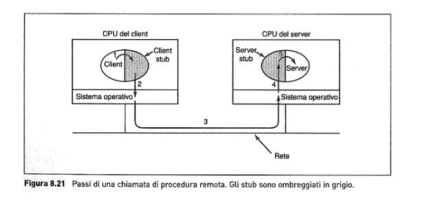
Memoria condivisa distribuita
definizione di pagina
La pagina è una suddivisione di memoria su parti di dimensioni minori per ottimizzare le operazioni. L’operazione di suddivisione si chiama paging
Benché RPC sia interessante, molti programmatori preferiscono un modello di memoria condivisa, e lo vorrebbero utilizzare anche su un multicomputer. Venne perciò inventata questa DSM(Distributed Shared Memory) che prevede una memoria virtuale per ogni macchina con le proprie pagine e tabelle. Quando una CPU effettua una LOAD o una STORE su una pagina che non ha, avviene una trap al sistema operativo, che quindi, localizza la pagina, e chiede alla CPU che la possiede correntemente di invalidare la pagina, e spedirla sulla rete di interconnessione. Quando arriva, la pagina viene mappata e viene fatta ripartire l’istruzione che aveva provocato il fault; in effetti, il sistema operativo sta soddisfacendo i fault di pagina della RAM remota, invece che dal disco locale. La differenza tra una vera memoria condivisa e DSM è illustrata nella Figura. Nella (a) si vede un vero multiprocessore con memoria fisica condivisa implementata tramite hardware; nella (b) si vede DSM implementata dal sistema operativo; nella (c) troviamo DSM implementata da livelli superiori del software.
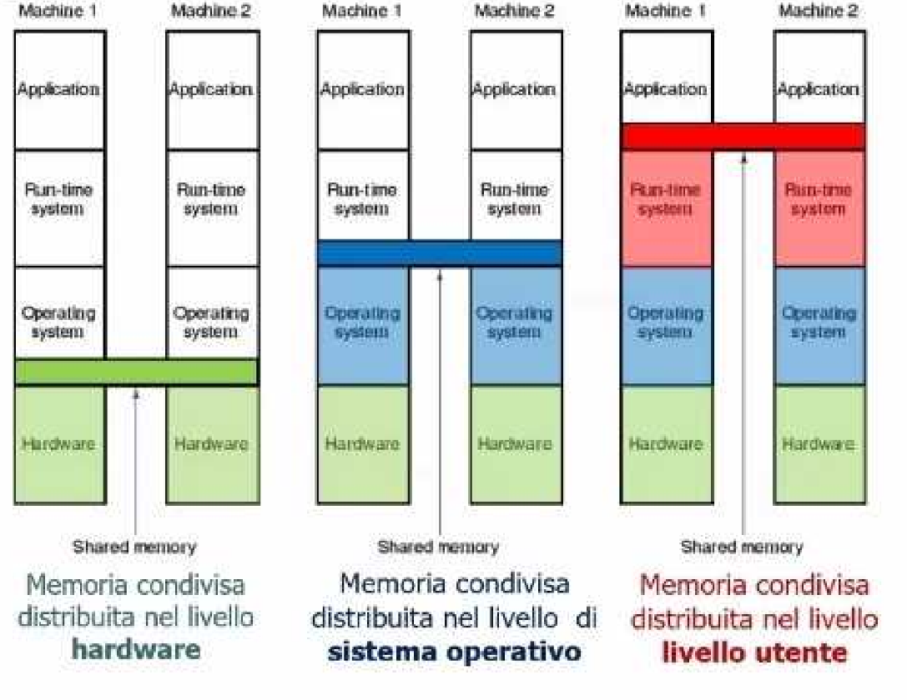
Scheduling
In un multiprocessore tutti i processi stanno nella stessa memoria. Quando una CPU finisce il suo task corrente esegue semplicemente un altro processo (tutti i processi posso essere candidati). Gli algoritmi di scheduling per il multi computer e il multi processore sono simili ma non tutti possono essere applicati ad entrambi. Ad esempio un algoritmo che NON FUNZIONA è quello che prevede la lista centralizzata dei processi pronti “ready” perché avendo un multi computer non posso indirizzare adeguatamente i processi in modo sensato perché ciascun processo può essere eseguito solo dalla CPU dove si trova in quel momento e quindi si crea un problema di bilanciamento. Una cosa importante dei multi computer è che quando si crea un nuovo processo esso deve essere posizionato in modo efficiente per non creare troppa disparità nel carico di lavoro.
Bilanciamento del carico
Ci sono degli algoritmi che permettono la gestione dei vari processi dei singoli nodi(computer) visto che è molto difficile controllarli. ci sono diverse cose da notare per gestire questi algoritmi: Il fabbisogno di CPU, l’utilizzo di memoria e la quantità di comunicazione con ogni altro processo. I possibili obiettivi sono: la minimizzazione dei cicli di CPU sprecati per la carenza di lavoro locale, la minimizzazione della larghezza di banda di comunicazione totale e condizioni eque per gli utenti e i processi.
VIRTUALIZZAZIONE
È una tecnica che permette di creare più computer virtuali all’interno di un computer singolo e reale La virtualizzazione introduce importanti vantaggi:
-
forte isolamento tra le macchine (isolamento dei malfunzionamenti);
-
minore spazio occupato;
-
minore consumo;
-
minore calore da dissipare;
-
maggiore manutenibilità;
-
possibilità di creare dei checkpoint (punti di ripristino);
-
possibilità di far girare applicazioni legacy su ambienti obsoleti;
-
possibilità di effettuare test delle applicazioni su differenti sistemi operativi senza disporre dell’hardware fisico necessario.
La “modalità kernel”, anche conosciuta come “modalità privilegiata” o “modalità supervisore”, è uno stato di funzionamento dei processori che consente l’esecuzione di istruzioni privilegiate e l’accesso diretto a risorse hardware critici. In questo stato, il processore ha il massimo livello di controllo sul sistema e può eseguire operazioni sensibili, come cambiare le impostazioni di configurazione hardware o gestire la memoria. Nel contesto dei sistemi operativi, il kernel è il nucleo centrale del sistema che gestisce le risorse hardware e fornisce servizi di base ai processi in esecuzione.
Quando un sistema operativo esegue operazioni critiche o gestisce risorse hardware, spesso lo fa nella modalità kernel per garantire la sicurezza e l’integrità del sistema.
Ogni CPU ha un insieme di istruzioni che si comportano in modo diverso quando vengono eseguite in modalità utente e kernel. Quando ciò avviene le istruzioni sono dette sensibili mentre quelle istruzioni che posso eseguire solo in modalità kernel sono dette privilegiate e se le provo ad eseguire in una modalità non kernel ottengo una trap (procedura automatica che si attiva quando avviene un eccezione).
Una macchina è virtualizzabile solo se le istruzioni sensibili sono contenute in quelle privilegiate. Ad oggi la virtualizzazione è stata introdotta direttamente sulle CPU commerciali col nome di SVM o VT.
CI SONO DUE TIPI DI HYPERVISOR
HYPERVISOR TIPO 1
Si posiziona come un SO host in modalità kernel e sopra ad esso ci sono tutti i vari sistemi operativi come macchine virtuali che pensano di stare in modalità kernel ma in realtà sono in modalità utente Quando il SO guest esegue una istruzione sensibile:
-
se la CPU non ha la VT l’istruzione fallisce e il sistema operativo crasha;
-
altrimenti avviene una trap nel kernel e l’hypervisor può vedere se l’istruzione è stata inviata da una VM del SO guest, in questo caso la esegue, o da un programma utente, in questo caso simula il comportamento dell’hardware reale. 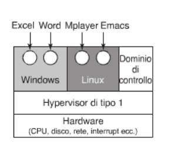 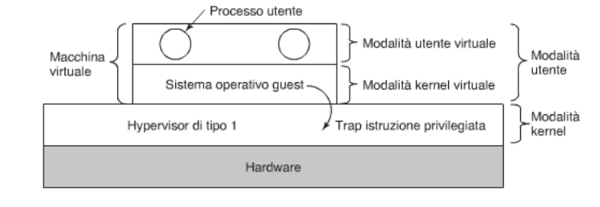
HYPERVISOR DI TIPO 2
È un software che viene eseguito sopra un SO Host. Questo Hypervisor interpreta le istruzioni della VM e le traduce sul SO della macchina reale. Un esempio è VMware ed è eseguito come programma utente. Questi hypervisor di tipo 2 sfruttano una tecnica di traduzione binaria, che gli permette di prendere i blocchi di istruzioni di base all’interno di un codice e li traduce come ad esempio (JMP, CALL, TRAP..) Tutte queste istruzioni vengono tradotte come una procedura VMware Questi blocchi vengono messi nella cache virtuale di VMware e vengono eseguiti alla velocità della macchina fisica
I DUE MESSI A CONFRONTO
Tutte le istruzioni sensibili che lavorano anche a livello kernel in un hypervisor di tipo 2 vengono emulate e quindi non vengono direttamente eseguite sul SO della macchina fisica. Con gli hypervisor di tipo 1 l’approccio trap and emulate con gli hardware VT genera troppi trap e troppi overhead di gestione, invece la loro traduzione come nel hypervisor di tipo 2 é più efficiente alcuni di tipo 1 però eseguono lo stesso la traduzione binaria comportandosi come quelli di tipo 2
differenza tra procedura e funzione
sono entrambi dei blocchi di istruzioni e la differenza è che la funzione ti ritorna un valore invece la procedura non ritorna nulla
Paravirtualizzazione
Gli hypervisor tipo 1 e 2 funzionano senza modifiche al SO guest, ma con performance non eccellenti. Un diverso approccio prevede la modifica del codice sorgente del SO guest: invece di eseguire istruzioni sensibili si effettuano chiamate di procedure definite dall’hypervisor. Quindi l’hypervisor definisce una interfaccia, cioè delle API (Application Program Interface), che i sistemi operativi guest possono attivare. Questo trasforma di fatto l’hypervisor in un microkernel e il SO guest modificato viene detto paravirtualizzato. Le performance ovviamente migliorano poiché le trap si trasformano in system call.